Introduction
This article shows how Multics mechanisms for segmentation, kernel and user rings of execution, and execution stacks cooperate to implement debug breakpoints in a secure, efficient, and extensible fashion. Another article describes the Multics Execution Environment in more detail.
Specifically, this article analyzes how the debug command uses a
 Master Mode Entry 2 mme2 instruction
to implement a breakpoint in an object segment.
Executing this instruction causes a MME2 fault in the running program, which invokes
the debug command, permitting in-depth investigation of the suspended program.
Master Mode Entry 2 mme2 instruction
to implement a breakpoint in an object segment.
Executing this instruction causes a MME2 fault in the running program, which invokes
the debug command, permitting in-depth investigation of the suspended program.
The analysis grew from a shorter summary of this topic, assembled to help Charles Anthony in repairing
the  dps8m simulator's handling of the Restore Control Unit
dps8m simulator's handling of the Restore Control Unit
 rcu instruction.
Mapping of a user program fault onto a condition signaled in the program's ring of execution
may be of interest to other readers. It is used for several fault types (overflow, divide check, mme, mme1,
mme2, mme3).
rcu instruction.
Mapping of a user program fault onto a condition signaled in the program's ring of execution
may be of interest to other readers. It is used for several fault types (overflow, divide check, mme, mme1,
mme2, mme3).
|
NOTE: Several links in this analysis open the Processor Manual (AL39), and jump to a specific page in the PDF file. The Google Chrome browser does the best job of handling each download. It opens to the correct page; and subsequent links to other pages reuse the AL39 document in the browser's cache. As this analysis is published, other browsers have flaws in this mechanism.
|
ContentsA Simple Program Output from this Program Object Code Debugging the Program Setting a Breakpoint Execution at a Breakpoint Ring 0: Breakpoint Instruction Generates a Fault Executing a Breakpoint Instruction Fault Cycle Fault and Interrupt Vectors Fault Cycle for MME2 Ring 0 Fault Handler: fim$signal_entry Ring 0 Exit Routine: signaller Preparing to Call the Outer Ring Signal Mechanism User Ring: Breakpoint as a Condition Support Routine: return_to_ring_0_ - return_to_ring_n_ Label Support Routine: signal_ Support Routine: sct_manager_ Handler for the Breakpoint Support Routine: debug$mme2_fault Restarting Execution at the Breakpoint After Debug Handles the Breakpoint Support Routine: return_to_ring_0_ - Primary Entrypoint Return to Ring 0 Ring 0 Entrance Routine: restart_fault Validating User Ring Control Unit Data Restarting the Verified Machine Conditions User Ring: Program Continues Execution |
COMPILATION LISTING OF SEGMENT hello
Compiled by: Multics PL/I Compiler,
Release 33e, of October 6, 1992
Compiled at: Arrakis
Compiled on: 01/28/17 1126.7 mst Sat
Options: table list
1 hello: proc;
2
3 dcl ioa_$nnl entry() options(variable);
4
5 call ioa_$nnl("Hello,");
6
7 call ioa_$nnl(" world!^/");
8
9 end hello;
A Simple Program
This analysis begins as a thought experiment, with creation of a user program in which a debug breakpoint can be set. To keep things simple, we'll use a "Hello, world!" program. The PL/I compiler listing shows source line numbers for this program.
The program is modified from its simplest form to permit setting a breakpoint between output of "Hello," and " world!". This will give visual confirmation of: where the breakpoint is set; when it is actually reached; and when the program ends.
Output from this Program
hello
Hello, world!
r 07:53 0.032 0
Just the line "Hello, world!" is expected as output when no breakpoint is set. Input lines are shown in blue font.
Object Code
This analysis uses the debug command to set a breakpoint in source line 7 of the
program. Code generated by PL/I is shown in this compiler listing fragment. In the PL/I listing,
instruction operands are given in decimal. For example, at instruction location 000027, the operand of the
 ldaq instruction
is an offset of -19 words from the current instruction
counter ic. We shall see that the debug command
displays such operands in octal, rather than decimal.
ldaq instruction
is an offset of -19 words from the current instruction
counter ic. We shall see that the debug command
displays such operands in octal, rather than decimal.
STATEMENT 1 ON LINE 7
call ioa_$nnl(" world!^/");
000027 aa 777755 2370 04 ldaq -19,ic 000004 = 040167157162 154144041136
000030 aa 6 00102 7571 00 staq pr6|66
000031 aa 057000 2350 03 lda 24064,du
000032 aa 6 00104 7551 00 sta pr6|68
000033 aa 6 00102 3521 00 epp2 pr6|66
000034 aa 6 00112 2521 00 spri2 pr6|74
000035 aa 777743 3520 04 epp2 -29,ic 000000 = 524000000011
000036 aa 6 00114 2521 00 spri2 pr6|76
000037 aa 6 00110 6211 00 eax1 pr6|72
000040 aa 004000 4310 07 fld 2048,dl
000041 aa 6 00044 3701 20 epp4 pr6|36,*
000042 la 4 00012 3521 20 epp2 pr4|10,* ioa_$nnl
000043 aa 0 00622 7001 00 tsx0 pr0|402 call_ext_out_desc
Debugging the Program
The analysis continues by using debug to set a breakpoint in the hello program.
Setting a Breakpoint
The following
 debug
command and debugging requests:
debug
command and debugging requests:
- display the source at line 7 of the hello.pl1 program file; and
- set a breakpoint at the second instruction of line 7 in the hello object segment.
debug /hello/&a7,s call ioa_$nnl(" world!^/"); ,i3 LINE NUMBER 7 27 777755 2370 04 ldaq -23,ic 000004 = 040167157162 154144041136 30 6 00102 7571 00 staq pr6|102 31 057000 2350 03 lda 57000,du +1< Break 1 set at hello|30 (line 7) At instruction: 30 6 00102 7571 00 staq pr6|102
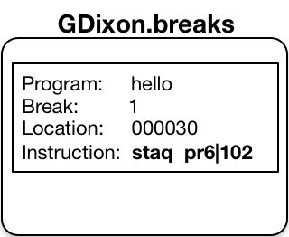
Debug sets a breakpoint in object code by saving the instruction at the breakpoint location in a per-user segment called the breakmap1.
- The debug breakmap segment is stored at: [homedir]>[user name].breaks
The .bl request lists all the breakpoints saved in the breakmap for the selected object segment.
.bl
Break 1 set at hello|30 (line 7) At instruction:
30 6 00102 7571 00 staq pr6|102
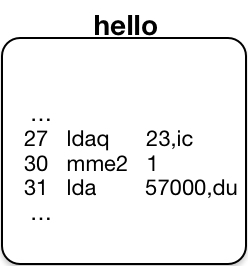
After a breakpoint is set, the program location now contains a
 Master Mode Entry 2 mme2 instruction,
with an operand set to the break number.
When executed, this instruction causes an event that results in signalling the mme2 condition.
Master Mode Entry 2 mme2 instruction,
with an operand set to the break number.
When executed, this instruction causes an event that results in signalling the mme2 condition.
-1,i3 LINE NUMBER 7 27 777755 2370 04 ldaq -23,ic 000004 = 040167157162 154144041136 30 000001 0040 00 mme2 1 31 057000 2350 03 lda 57000,du .q r 07:53 0.149 0
Execution at a Breakpoint
hello
Hello,Break 1 at line 7 of hello - at 367|30
When a breakpoint is set, running the hello program encounters the breakpoint. The debug on-unit for the mme2 condition accepts debugging requests.
.t
DEPTH NAME CONDITION
0 initialize_process_|704
1 listen_|34522
2 abbrev_processor|14103
3 command_processor_|2101
4 hello|30 mme2
A stack trace request shows the hello command being invoked, with execution stopped at hello|30 with a mme2 condition.
5 return_to_ring_0_|0
6 signal_|10017
7 sct_manager_$call_handler|11461
8 mme2_fault_handler_|3756
9 mme2_fault|6622
10 db_parse|14311
However, the routines that signal the mme2 condition and invoke debug also have frames on the stack. These support routine stack frames are shown in gray here, because they are usually omitted from the debug stack trace. This focuses user attention on the program that reached a breakpoint. Later sections of this analysis reveal how these support routines are invoked by execution of the mme2 instruction.
.c
world!
r 12:11 0.116 1
A continue request tells debug to restart program execution; the original instruction at the breakpoint is executed, followed by remaining code in the hello object, which outputs the second part of hello's output line. When the program ends, Multics displays a standard ready line.
Note that the breakpoint mme2 instruction remains in the object segment until explicitly reset by the user, or until program source is recompiled. Thus, subsequent program invocations repeat the scenario outlined here.
Ring 0: Breakpoint Instruction Generates a Fault
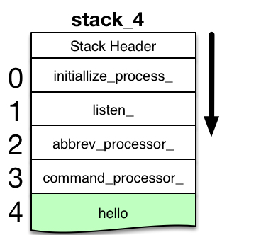
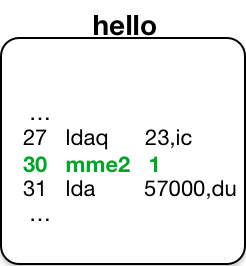
To learn how a breakpoint interrupts execution of its containing program, start with the components introduced above.
- Object segment for the program, compiled with the -table option, in which a debug
breakpoint (the mme2 instruction) has been set. The
 Procedure Pointer Register PPR
points to the currently-running instruction, which is
the breakpoint instruction. It is shown in bold green text.
Procedure Pointer Register PPR
points to the currently-running instruction, which is
the breakpoint instruction. It is shown in bold green text.
- Stack frame for the running program. The stack_4 segment begins with a stack_header structure; and grows as frames for new programs are pushed onto the bottom of the stack segment. Stack Pointer Register pr6 points to the frame for the running program. This running frame may grow or shrink as the program changes its set of variables and temporary storage. The running frame is highlighted in green.
- The user's breakmap segment contains information about breakpoints set in programs, including the instruction originally at each breakpoint location.
Executing a Breakpoint Instruction
When the running program executes the mme2 instruction, it causes a MME2 fault event to occur. The processor suspends execution of the program running in the user ring, and begins a Fault Cycle in ring 0.
Fault Cycle
The
 Control Unit
is the section of the processor that oversees the flow of instruction executions.
Two sorts of events can temporarily suspend program execution and redirect the flow to other instructions:
Control Unit
is the section of the processor that oversees the flow of instruction executions.
Two sorts of events can temporarily suspend program execution and redirect the flow to other instructions:
 faults and interrupts.
When such events occur, the processor begins a
faults and interrupts.
When such events occur, the processor begins a
 Fault Cycle
to redirect instruction execution. For a MME2 fault at hello|30, or for
other faults and interrupts, the Fault Cycle includes the following:
Fault Cycle
to redirect instruction execution. For a MME2 fault at hello|30, or for
other faults and interrupts, the Fault Cycle includes the following:
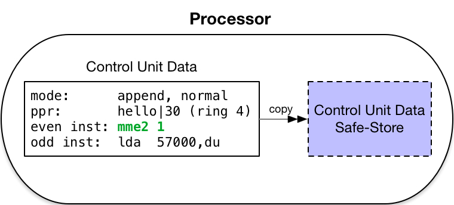
-
Safe-Store
Control Unit Data
into program-invisible holding registers. This records the point of execution at which the fault or
interrupt began. The scu instruction copies data from these holding registers into memory.
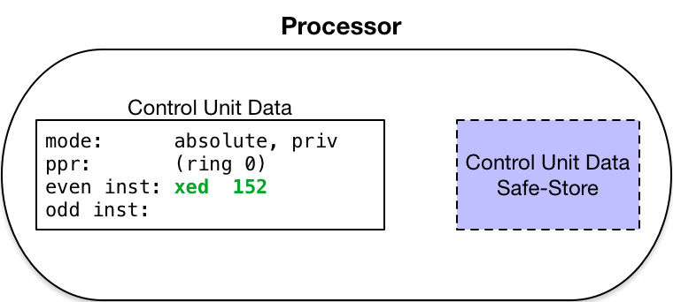
- Temporarily enter the addressing mode:
absolute mode,
and the instruction mode: privileged mode.
- Force current ring of execution to ring 0 (Multics kernel).
- Generate the absolute address of the fault vector entry for the event type that has occurred.
- Force into the instruction register an Execute Double
xed instruction
whose operand is this generated address.
- Execute this instruction.
Fault and Interrupt Vectors
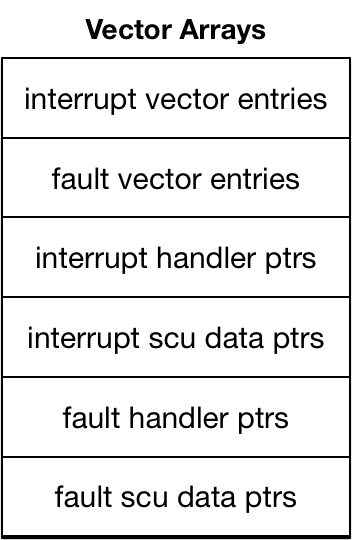
The Fault Cycle references a fault or interrupt vector entry specific to the particular fault or interrupt that has occurred. Such entries are defined in the Multics fault vector structure1, which holds several arrays containing:
- interrupt vector entries for 32 interrupt types;
- fault vector entries for 32 fault types;
- 32 pointers: the handlers for each type of interrupt;
- 32 pointers: the control unit storage location used for each interrupt type;
- 32 pointers: the handlers for each type of fault; and
- 32 pointers: the control unit storage location used for each fault type.
- The array of interrupt vector entries always begins at absolute memory address 0. The architecture allows the array of fault vector entries to begin at any even location elsewhere in the first page of memory. (Location of fault vector entries is specified in the Fault Vector switches on the processor configuration panel.) For Multics, the fault entries and other pointer arrays immediately follow the interrupt vector entries, as shown in fault_vector.incl.pl1.
Each interrupt or fault vector entry is a pair of instructions to be invoked by the Execute Double (xed) instruction generated by the Fault Cycle. For Multics vector entries:
- Instruction 1 is a Store Control Unit
scu instruction.
Control Unit Data is stored at the address given in
the instruction. For Multics, this address indirects through
one of the interrupt or fault scu data pointers stored in the fault vector arrays. Use of such ITS
(Indirect-through-Segment) pointer changes processor execution from absolute mode to
append mode
for the scu instruction, and for subsequent instructions. Storing indirectly through
an in-memory pointer avoids changing any Pointer Register to point to a storage location. (The pointer registers
in use at time of fault have not been saved, as yet.)
- Instruction 2 is a transfer
tra instruction
to a fault handler. The transfer address also indirects
through one of the interrupt or fault handler pointers specific to the fault or interrupt type.
These interrupt and fault handler pointers are stored in the fault vector arrays. Again, the transfer avoids
changing any Pointer Register to specify the transfer location.
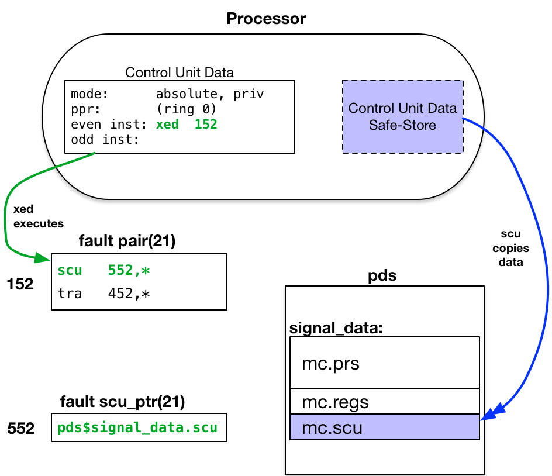
Fault Cycle for MME2
When the hello program executes the breakpoint mme2 instruction, that instruction starts a
MME2 fault cycle. The MME2 fault has a
 fault number of 21.
Its fault vector entry is at address 1521. The xed
instruction executes the pair of instructions in that fault vector.
fault number of 21.
Its fault vector entry is at address 1521. The xed
instruction executes the pair of instructions in that fault vector.
- By definition, the
Master Mode Entry 2 (mme2) instruction
uses the vector entry located at:
FAULT_VECTOR|52. This is an absolute address in
the first page of memory. The FAULT_VECTOR switches in the processor configuration panel specify an
address of 1008. Thus, the MME2 fault vector entry is located at absolute address: 1528.
The fault vector entry begins with an scu instruction, which copies the Safe-Stored Control Unit Data to the location given in the scu data ptr for the MME2 fault: pds$signal_data.scu2. The Process Data Segment pds is a per-process, ring 0 segment created in the process directory. Its pages are wired in memory while its owning process is running on the processor.
- Since the MME2 fault was started by the process running on this processor, it is appropriate to store data about the fault in the process's pds segment. The signal_data entry is structured as a standard set of machine conditions (mc), as shown in mc.incl.pl1. Thus, pds$signal_data.scu is a reference to the mc.scu structure element at the pds$signal_data location.
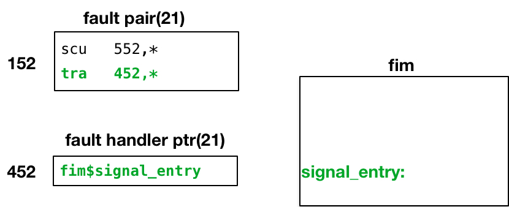
The xed execution continues with the second instruction of the MME2 fault vector entry, which transfers to the ring 0 handler for this fault. The fault handler ptr for MME2 points to fim$signal_entry, an entrypoint in the Fault Interceptor Module.
At this point in handling the MME2 fault, only three instructions have been executed:
- The xed instruction generated by the processor at the end of the Fault Cycle.
- The two instructions it executes from the fault vector entry:
- The scu instruction to save the safe-stored Control Unit Data in memory.
- The tra instruction to entry the MME2 fault handler.
None of these instructions has changed, nor depends upon, any pointer register or register of any kind. All program-visible registers still contain data they held when the fault occurred.
Ring 0 Fault Handler: fim$signal_entry
The ring 0 Fault Interceptor Module: fim.alm1 is a ring 0, kernel segment whose pages are wired in memory. This prevents taking a page fault while processing another type of fault. The fim operates in privileged instruction mode, with interrupts inhibited2 to prevent I/O interrupts and other low-priority faults from interrupting its handling of the fault or interrupt.
- To review the code in fim.alm, you will also need the ALM version of the machine conditions structure, mc.incl.alm.
- Interrupts and certain low-priority faults are recognized only at specific times during the execution of an instruction pair. If, at these times, bit 28 in the instruction word is set ON, the trap is inhibited and program execution continues. The interrupt or fault signal is saved for future recognition and is reset only when the trap occurs.
The fim defines several fault handler3 entrypoints. Most of these provide similar services, but store data for different groups of faults in distinct locations. The MME2 fault is one of a group of faults that are handled directly in the faulting ring of execution. The fault event is converted to a condition that is signaled in this faulting ring4. The fim$signal_entry handles such faults.
- Modules other than fim.alm manage expected kernel faults (e.g., page faults) needing special handling; and unexpected faults (e.g., execute faults) that may stop system operation. No further mention is made of these other fault handlers.
- Most often, the faulting ring of execution is the user ring. But it might also be one the of rings between the user ring and ring 0, if code in such ring experiences a fault or interrupt.
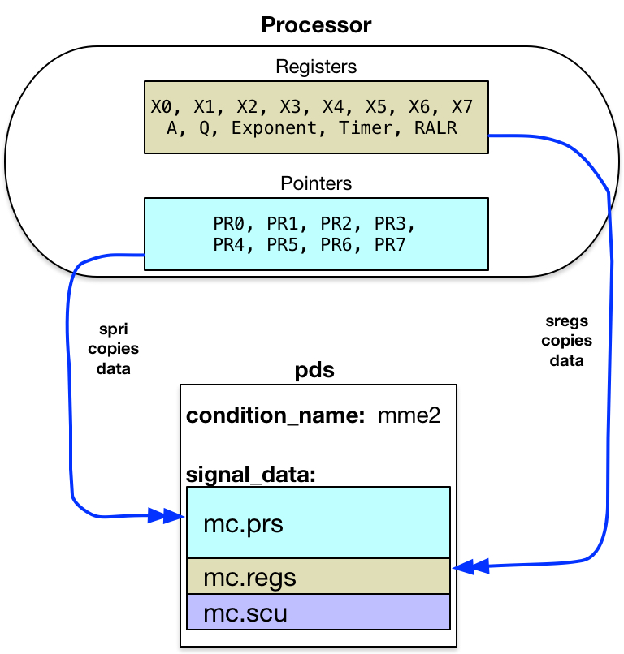
The first operation performed by the handler saves register contents as they were at the time of the fault.
These are stored in the pds$signal_data (adjacent to the Control Unit Data
saved by scu instruction). The handler begins with a Store Pointer Registers as ITS Pairs
 spri instruction.
It continues with a Store Registers
spri instruction.
It continues with a Store Registers
 sreg instruction.
The handler can now use these registers for its own purposes.5
sreg instruction.
The handler can now use these registers for its own purposes.5
- fim also saves other information in the machine conditions and elsewhere, not called out specifically to shorten this analysis.
Next, the handler uses the fault number, stored in the Control Unit Data at mc.scu.fi_num, to access an internal array of fault information (at fim's fault_table: label). This table:
- Identifies the code path to follow within fim.alm for the fault. MME2 faults branch to the call_signaller label.
- Specifies whether the fault event must appear in the security audit log. MME2 faults are not audited.
- Specifies the condition name to use when signalling this event in the outer ring. MME2 fault is mapped onto the condition name: mme2.
The fim$signal_entry call_signaller code path ends fault handling by: storing the condition name at pds$condition_name; and transferring to signaller$signaller, to complete handling of the MME2 fault.
Notice that fim performs a simple set of operations: reading from static data tables, and storing data in permanent segments. It does nothing that requires temporary storage, and thereby avoids creating (pushing) a stack frame onto any kernel stack segment.
Ring 0 Exit Routine: signaller
The fim handler captured machine conditions at the time of the MME2 fault, and chose a condition name to be signaled when reporting the fault event in the outer ring. The next step is to actually signal that condition on the stack of the faulting program, which is usually an outer ring stack. The ring 0 signaller.alm segment1 performs this operation.
- The signaller.alm
source code references include files:
- signaller_stack.incl.alm: describes the layout of the stack frame which signaller pushes onto the outer ring stack.
- stack_frame.incl.alm and stack_frame.incl.pl1: describes standard information included at the start of every stack frame.
- stack_header.incl.alm: describes the standard information placed at the beginning of each stack. signaller uses several header items to invoke the outer ring signal mechanism (which can differ for each ring).
signaller is a ring 0 segment that operates in privileged instruction mode, with interrupts inhibited to prevent I/O interrupts and other low-priority faults from interrupting its extended handling of the fault.
signaller$signaller performs checks for different user environments when selecting the stack on which to signal the condition.
- Did the fault occur in the signaller or restart_fault programs? If so, terminate the process because the signaller's code is unexpectedly causing a fault.
- Was the user program running in
BAR mode
when the fault occurred? If so, construct a stack frame pointer using stack_header.bar_mode_sp
(stack frame which called the program running in BAR mode). If the BAR mode stack frame is not the
last stack frame, then the stack is corrupt; terminate the process. Otherwise, signal on the stack
given in the fault's machine conditions (mc.prs(6)).
- Does Control Unit Data show a ring number of the faulting program equal to the ring number in the machine conditions stack pointer? If not, signal the condition on the stack of the faulting program's ring number: pds$stacks(program_ring). Normally, signal on the stack given in the fault's machine conditions (mc.prs(6)).
For a MME2 fault caused by a debug breakpoint, the selected stack is most likely the stack for the user's login ring. That is the ring containing object segments in which breakpoints can be set.
Preparing to Call the Outer Ring Signal Mechanism
Having decided on which stack to signal the condition, the signaller creates a new stack frame at the end of this stack1.
- I mistakenly thought the signaller creating a new frame at the end of an outer ring stack was called a crawlout operation. It differs from a crawlout in several ways. But its similarity to a crawlout led Bernie Greenberg to christen this ring-0-signalling-in-outer-ring mechanism as a walkout from ring 0.
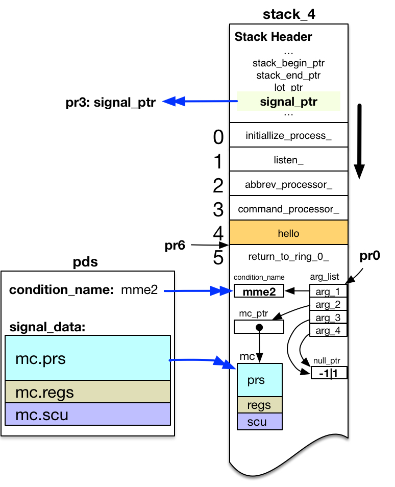
At this point, signaller is running in ring 0 without a stack frame. There are no active frames on any stack for this process. The diagram shows the frame for hello highlighted in orange, because execution of the program owning that stack frame was suspended by the MME2 fault.
When signaller creates the new stack frame on the selected stack, it sets the Stack Pointer Register pr6 pointing to that frame. It assigns ownership of the frame to the program entrypoint return_to_ring_0_$return_to_ring_0_.2,3,4
- return_to_ring_0_ is a segment with ring brackets of 0,7,7 (writable in ring 0, but executable in any ring). That allows it to own a frame on stack_4.
- return_to_ring_0_.alm is a small ALM program available for your review.
- Stack frame ownership is assigned by setting stack_frame.entry_ptr and stack_frame.return_ptr both to the return_to_ring_0_$return_to_ring_0_ entrypoint.
Signaller then copies machine conditions for the fault into the new stack frame.
- Gets one of 116 slots5 in the pds$mc_save_ptr array.
- Copies Control Unit and EIS restart data6 from the fault machine conditions in pds$signal_data to this save slot. Stores a unique SCU index value in the saved Control Unit data.
- Copies the entire fault machine conditions from pds$signal_data into the new stack frame. Stores the same unique SCU index value into mc.fim_temp7.
- The number of pds$mc_save_ptr slots is limited to 116, because the pds structure plus 116 slots just fills the smallest segment size (4K words of storage).
- EIS (Extended Instruction Set) restart data includes internal pointer and length values used within the Control Unit when executing an EIS instruction. This data is needed to restart an EIS instruction (such as copy of a long character string) faulting in the middle of instruction execution. (For example, it records how many characters have been copied so far, with pointers to the uncopied data locations.)
- If the machine conditions are restarted, the SCU index value allows comparison of the saved Control Unit data with the machine conditions being restarted from the outer ring. (More on this later.) Signaller also adds a cleanup on-unit to the new stack frame. This on-unit, at restart_fault|1, frees the machine condition slot in the pds$mc_save_ptr array if return_to_ring_0_'s stack frame is released (rather than being returned to).
Signaller also copies the name of the condition to be signaled from pds$condition_name into the new stack frame.
Signaller constructs an argument list to pass the saved information to the outer ring signal mechanism. The call is of the form:
call signal_( condition_name, mc_ptr, null, null );
Signaller loads a pointer to this argument list into the Argument List Pointer Register pr0. Signaller loads a pointer to the outer ring signal program from the outer ring stack header stack_header.signal_ptr into pr3.
Finally, signaller constructs an outer-ring pointer to the external label:
return_to_ring_0_$return_to_ring_n_.
Then it "returns" through this pointer, using a Return Control Double
 rtcd instruction.
rtcd instruction.
User Ring: Breakpoint as a Condition
Returning to the original ring of execution, a mme2 condition is signaled to indicate that execution has reached the program breakpoint.
Support Routine: return_to_ring_0_ - return_to_ring_n_ Label
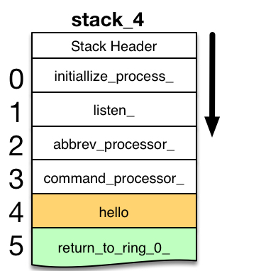
Code in return_to_ring_0_1 is now running in the outer ring. The current Stack Frame Pointer (pr6) points to its stack frame, just created by signaller. Therefore, that stack frame is shown in green.
- return_to_ring_0_.alm is a small ALM program available for your review.
Interrupts and low priority faults are no longer inhibited. So any pending interrupts or faults (e.g., ring alarm faults) that arose while running in ring 0 code can now occur.
Code at the return_to_ring_n_ label consists of only four instructions:
nop
nop
nop
callsp bb|0
The three  nop instructions
give the processor an opportunity to process any pending
interrupts or low-priority faults delayed while running in ring 0 with interrupts inhibited.
nop instructions
give the processor an opportunity to process any pending
interrupts or low-priority faults delayed while running in ring 0 with interrupts inhibited.
Officially, the callsp instruction is known as a
 call6 instruction.
Its operand bb|0 is an ALM
synonym for pr3|0, which contains the outer ring signal_ptr
value. call6 references pr6, which correctly
points to the return_to_ring_0_ stack frame. And signaller loaded the
Argument List Pointer Register (pr0) for this call with the address of the
arg_list constructed in this stack frame (shown in the diagram above).
call6 instruction.
Its operand bb|0 is an ALM
synonym for pr3|0, which contains the outer ring signal_ptr
value. call6 references pr6, which correctly
points to the return_to_ring_0_ stack frame. And signaller loaded the
Argument List Pointer Register (pr0) for this call with the address of the
arg_list constructed in this stack frame (shown in the diagram above).
This call invokes the outer ring signal mechanism.
Support Routine: signal_
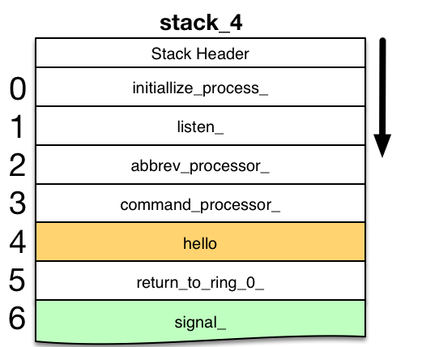
In the user ring, stack_header.signal_ptr points to the signal_1 program. This program supports two kinds of condition handlers. The normal handler is an on-unit attached to the stack frame of a running program. This on-unit is active only while the stack frame appears on the stack.
- The signal_.pl1 program source is available for review. Only the first 23 lines following the ARG(0): label are pertinent to this analysis. They show invocation of the sct_manager_$call_handler.
However, debug must implement breakpoints set in a program when debug is no longer running. For example, breakpoints set in a program should be handled if some program failure triggers creation of a new process. The user reinvokes the program being debugged from a command, without restarting debug.
For such cases, signal_ supports a less-used type of condition handler called a static handler. Before searching for a normal condition on-unit, signal_ calls sct_manager_$call_handler, asking it to invoke any static handler for the condition being signaled. It passes the following information:
call sct_manager_$call_handler( mc_ptr, condition_name, ..., continue);
If sct_manager_$call_handler can handle the condition, it sets continue="0"b to stop further signalling.
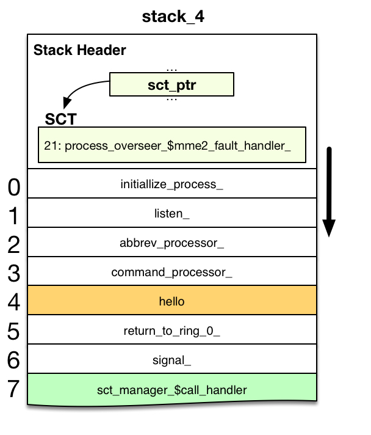
Support Routine: sct_manager_
The sct_manager_1 looks in the System Condition Table (SCT) for static handlers. The SCT for a ring is located just after the declared stack_header structure in the Stack Header region (first page) of the stack segment. The stack_header.sct_ptr points to the SCT.
- The sct_manager_.pl1 is available for review. It matches mc.fcode values against SCT index constants defined in static_handlers.incl.pl1.
For each possible value of mc.fcode (the machine conditions fault code), a handler slot is reserved in the SCT. For MME2, the fault code is 21. sct_handler(21) points to process_overseer_$mme2_fault_handler_. This entry was added to the SCT by initialize_process_ when the process was created.
sct_manager_ calls the static handler, with all of its arguments. It permits the handler to decide how to set the continue argument.2
- If no static handler is found for a given fault code, then sct_manager_ sets the continue flag to "1"b, and returns to let signal_ continue searching for an on-unit.
Handler for the Breakpoint
The debug break handling entrypoint is invoked to accept debugging requests.
Support Routine: debug$mme2_fault
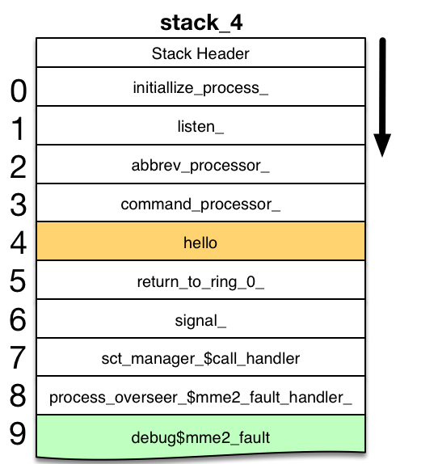
process_overseer_$mme2_fault_handler_ is a proxy handler that actually calls the debug$mme2_fault static handler. It passes all incoming arguments to the debug handler.
debug$mme2_fault1 is called with a pointer to the machine conditions captured for the MME2 fault. These are the machine conditions placed in the return_to_ring_0_ stack frame by signaller. debug uses them to locate the breakpoint that executed the mme2 instruction, and to find that breakpoint entry in the breakmap.
- Source for the debug$mme2_fault entrypoint may be reviewed in debug.pl1, starting at the mme2_fault: entrypoint label.
It calls db_parse2 to parse incoming debug request lines from the user: requests to trace the stack, set or reset breakpoints, continue execution after a breakpoint is hit, etc. For a .c request, it calls db_break$restart to continue execution from the point at which it was suspended by the current breakpoint.
- Operations of db_parse are not pertinent to this analysis, so source for this module has not been provided for review.
Restarting Execution at the Breakpoint
db_break$restart1 handles restarting of execution when continuing from a debug breakpoint.
- Source for the db_break$restart entrypoint is available for review in
db_break.pl1, at
the restart: label.
- db_break.pl1 makes extensive references to the machine conditions and Control Unit Data in mc.incl.pl1.
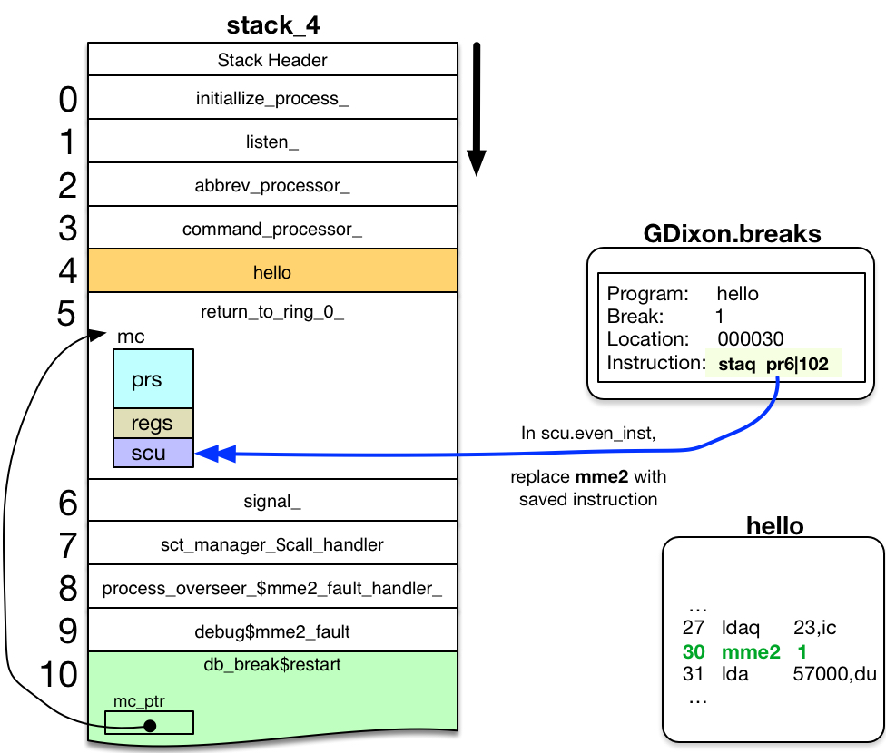
When continuing from a regular breakpoint that is still set, db_break$restart wants to continue from the breakpoint by executing:
- the original instruction at the breakpoint; followed by
- subsequent instructions in the hello object segment.
But the mme2 instruction still remains at that breakpoint location in the object segment, ready to break during a future execution of this hello code path.
To execute the instruction originally at the breakpoint, db_break$restart replaces the mme2 instruction at mc.scu.even_inst with the original instruction from the breakmap entry.2,3,4
- debug$mme2_fault was called with an mc_ptr argument, pointing to the mc structure placed in return_to_ring_0_'s stack frame. This mc_ptr was passed as an argument to db_break$restart.
- If a breakpoint has just been set at the location immediately following the current breakpoint, then a mme2 for this new breakpoint must be placed in scu.odd_inst. The Control Unit fetches a pair of instruction words at a time. Without this extra step, the original instruction (rather than the just-set breakpoint) would appear in the saved machine conditions.
- db_break$restart also zeros three fields in Control Unit Data, for reasons
not documented in the code.
- scu.apu.xsf;
- scu.word3 (the entire word); and
- scu.cu.its.
db_break$restart then returns to the restart_fault: action in debug$mme2_fault.
After Debug Handles the Breakpoint
Upon return from db_break$restart, the debug$mme2_fault static handler returns to its caller, the proxy static handler.
The proxy handler, process_overseer_$mme2_fault_handler_, sets its continue parameter to "0"b, telling signal_ the mme2 condition has been handled. It then returns to its caller.
The sct_manager_$call_handler that invoked the static handler now returns to its caller.
signal_, seeing continue="0"b, returns to its caller.
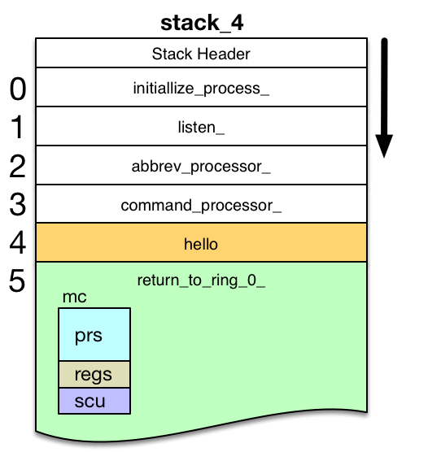
Support Routine: return_to_ring_0_ - Primary Entrypoint
In Support Routine: return_to_ring_0_ - return_to_ring_n_ Label (see above), signaller exited ring 0 by doing a rtcd instruction to the return_to_ring_0_$return_to_ring_n_1 label. Code at that external label called the outer ring signal_ program.
- return_to_ring_0_.alm is a small ALM program available for your review.
But signaller set the owner of the stack frame to the primary entrypoint: return_to_ring_0_$return_to_ring_0_. It also set the stack_frame.return_ptr to this same code location. Thus, when signal_ returns, the return operator transfers to this code.
Primary entrypoint code is:
return_to_ring_0_: callsp restart_fault_ptr,* call into ring zero even restart_fault_ptr: its 75|0
restart_fault_ptr2 points to the restart_fault|0 entrypoint in segment 758.
- Source for return_to_ring_0_.alm shows restart_fault_ptr: as the label of an ITS pointer defined in the text section of program, initialized to a null pointer value (-1|1). However, initialize_faults sets this pointer to addr(restart_fault$) (the PL/I equivalent of restart_fault|0) when the kernel is loaded during system initialization. Since the loaded kernel segments are part of every process, all processes use the restart_fault|0 value.
Return to Ring 0
The kernel must validate the machine conditions to be restarted. If acceptable, it restarts execution based upon the registers and instructions in those machine conditions.
Ring 0 Entrance Routine: restart_fault
restart_fault1 is a gate into ring 0,2 with ring brackets: 0,0,7. Like all gate segments, the first section of code is a transfer vector with an entry for each of the permitted gate entrypoints. The two entrypoints are:
000000 tra restart_entry 000001 tra cleanup_entry
- Source for restart_fault is available for review
in restart_fault.alm. Also needed
are:
- mc.incl.alm: the ALM version of the machine conditions structure.
- mc.incl.pl1: the PL/I version of the machine conditions structure.
- While restart_fault code is structured like a gate, and stored in a hardcore segment with gate ring brackets, it differs from normal gates (such as hcs_) in one important aspect. restart_fault has no entry in the file system. It is part of the Multics kernel, loaded by system initialization, and activated as a segment in every process. Since it has no file system entry, it cannot be called symbolically from a source program; without a file system entry, there is no way to snap (convert) the symbolic entrypoint name referenced in a program to an entry variable.
restart_fault operates with interrupts inhibited to prevent I/O interrupts and other low-priority faults from interrupting its restarting of faulting code.
restart_fault is co-framer (along with signaller) of storage in return_to_ring_0_'s stack frame. It knows the layout of the automatic variables in that stack frame; in particular, it uses the machine conditions (mc) structure located in this stack frame. And while signaller creates the stack frame, restart_fault removes it if the fault is restarted.3
- If the faulting program is aborted using the release command, then the stack unwinder program removes the return_to_ring_0_ frame from the stack, after invoking its associated cleanup on-unit. Earlier, it was noted that signaller defined this on-unit as restart_fault|1, which invokes the cleanup_entry in this gate.
Validating User Ring Control Unit Data
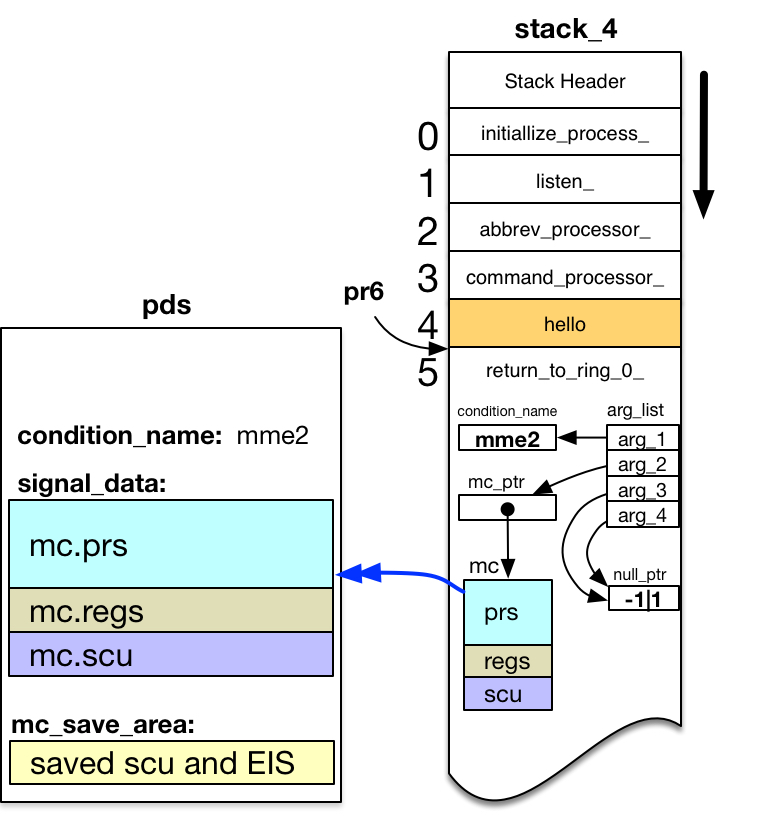
restart_fault's restart_entry code prepares for a possible restart as follows:
- Copy the machine conditions from the return_to_ring_0_ stack frame
to pds$signal_data. This storage is protected in ring 0, and wired in
memory to avoid page faults while restarting from the fault.
- The Pointer Registers are copied individually, to ensure that Addressing Unit pointer segment and ring number validation gets applied when copying the pointers between rings.
- Find the machine conditions in pds$mc_save_area matching the unique SCU index from the copied machine conditions.
- Compare the mc.scu data copied from the outer ring with data saved by signaller at the time of the fault.
The outer ring can make changes to the
 Control Unit Data
to correct the cause of the fault, and request ring 0 to then restart using this corrected instruction
data. restart_fault must ensure these changes:
Control Unit Data
to correct the cause of the fault, and request ring 0 to then restart using this corrected instruction
data. restart_fault must ensure these changes:
- Request restart for fault conditions that are possible to restart. (Some fault conditions are not restartable.)
- Do not change from the original ring of execution, or segment containing the faulting execution point. The location within the executing segment (mc.scu.ic, the Instruction Counter field of Control Unit Data, word 4) may change.
- Do not change the segment or ring number of any address referenced in the Temporary Pointer Register (tpr). The offset value in this register (mc.scu.ca, the Computed Address field of the Control Unit Data, word 5) may change.
Therefore, restart_fault imposes the following restrictions on the Control Unit Data to be restarted.
- Is the copied Control Unit Data exactly equal to the saved data?
- They may be totally equal unless the mid-instruction fault (MIF) flag is on, and the fault is an Illegal Procedure (IPR) fault.
- If the two Control Unit Data images differ:
- Is this a restartable mid-instruction fault?
- scu.ir.mif (mid-instruction fault) must be "0"b; or
- both scu.cu.IF (fault occurred during instruction fetch) and scu.cu.RFI (refetch instruction) must be "1"b.
- Is this a non-recoverable fault?
- Verify that scu.if.parm (parity mode) is "0"b.
- Verify that scu.if.abs (running in absolute mode) is "0"b.
- Is this an attempt to change the ring or segment of execution?
- Verify there are no changes in the words 0-3 of Control Unit Data. (Words 4-7 may differ.)
- Is this a restartable mid-instruction fault?
Restarting the Verified Machine Conditions
After verification, restart_fault continues:
- If an overflow fault occurred, clear the affected mc.scu.indicators, in case the restart encounters another overflow situation.
- Copy the EIS restart data saved from the fault into pds$signal_data.eis_info. The user ring may not change this data.
- Pop (remove) the return_to_ring_0_ stack frame from the outer ring stack.
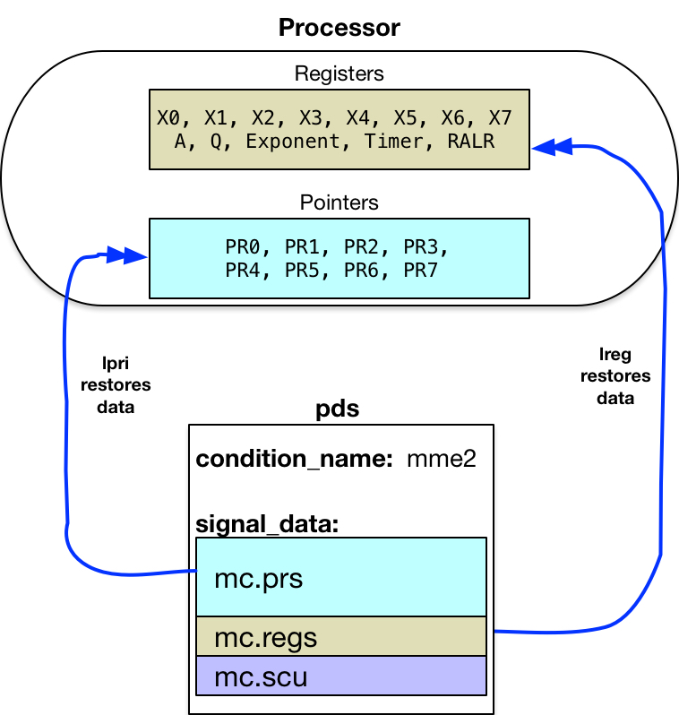
It uses information in the copied machine conditions to restart execution where the fault occurred. This begins with restoring registers, in reverse order of usefulness (because restart_fault is using pointer registers to access the machine conditions).
So index registers, A, Q, etc. are restored first, using an
 lreg instruction.
Then pointer registers are restored, using an
lreg instruction.
Then pointer registers are restored, using an
 lpri instruction.
lpri instruction.
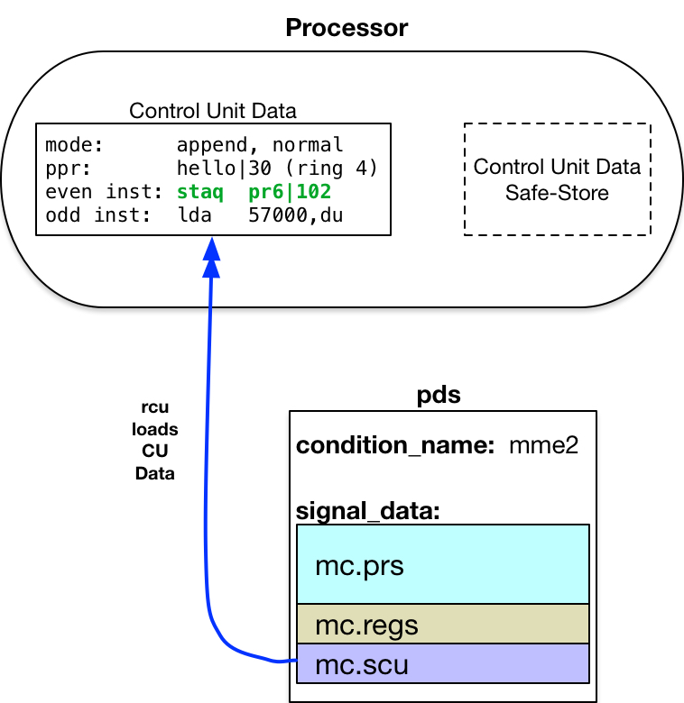
Execute a Restore Control Unit
 rcu instruction
to load the verified, possibly modified Control
Unit Data from mc.scu to the processor Control Unit internal
registers. This restarts execution of the faulting program in its original ring of execution.
rcu instruction
to load the verified, possibly modified Control
Unit Data from mc.scu to the processor Control Unit internal
registers. This restarts execution of the faulting program in its original ring of execution.
It is important to note that the rcu instruction, may only be used when running
in  privileged mode.
Attempting to restore damaged or malicious Control Unit Data could:
privileged mode.
Attempting to restore damaged or malicious Control Unit Data could:
- Change addressing and privilege modes of operation.
- Cause the CPU to stop all processing (hang or lockup).
- Transfer to arbitrary locations in arbitrary rings of execution.
- Read or store data at any location in memory.
Therefore, its use is restricted to the ring 0 kernel software.
debug does modify the machine conditions to run the original instruction at the breakpoint, which it copied from the breakmap into mc.scu.even_inst.
When the machine conditions are restarted, the hello program continues execution with the original instruction that was at the breakpoint, followed by the remaining instructions in the program.1
-
Note that the Control Unit reads instructions from memory 2-words at a time, starting with an even location. Since most instructions fill one word, this means two instructions may be present in the Control Unit Data. The breakpoint examined here was at an even location. So the mme2 instruction and the lda that followed it were in the Control Unit when the fault occurred.
When restarting from the machine conditions altered by debug, debug replaced the mme2 instruction causing the fault with the original staq instruction in the mc.scu.even_inst. It left the lda untouched in mc.scu.odd_inst. Thus, execution continued with: the two instructions loaded from machine conditions into the Control Unit; followed by remaining instructions starting at hello|32.
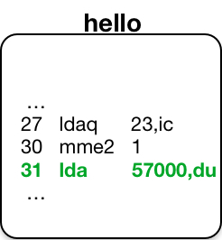
User Ring: Program Continues Execution
As the hello program continues execution, note that the breakpoint remains set in the object segment. The next traversal of this code path will also stop at the breakpoint.
The breakpoint remains in the object segment until: it is reset via the debug .br request; or until the source is recompiled.
Original 08 Feb 2017 GCD